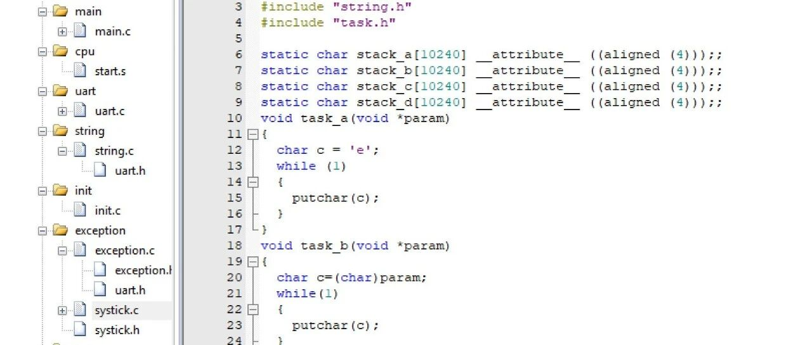

自己写一个简单的freertos（核心代码部分）
引言：
在嵌入式系统开发中，实时操作系统（RTOS）扮演着至关重要的角色，它能够有效地管理多任务的执行，提高系统的并发性和响应速度。FreeRTOS作为一款广泛使用的开源RTOS，其核心设计理念和实现机制值得深入研究和学习。为了更好地理解RTOS的工作原理，我决定模仿FreeRTOS的核心代码，自己实现一个简化版的RTOS。这个简化版RTOS与标准FreeRTOS的主要区别在于：
不设优先级/挂起：所有任务的优先级相同，采用简单的轮转调度策略。
仅支持时间片轮转调度：不支持其他复杂的调度算法，如优先级抢占式调度。
本文将详细介绍这个简化版RTOS的实现过程，从任务创建、调度器设计到异常处理，逐步解析其核心代码和设计思路。本文的下一篇文章（下半部分）会写一些该操作系统外设的驱动函数。
一、任务拆解
OS初始化和中断管理
任务创建与启动
任务轮转调度
异常处理
二、简单OS的实现思路具体分析
（一）OS初始化和中断管理
向量表初始化（start.s）
复位处理程序（Reset_Handler）
异常处理中断设计
（二）任务创建与启动
任务创建（task.c）
任务启动（start.s）
（三）任务轮转调度
SysTick中断服务函数（SysTick_Handler_asm）
2.调度器实现（systick.c）
（四）异常处理
HardFault_Handler
UsageFault_Handler
SVC_Handler
UsageFaultInit
三、OS的main函数实现
栈空间定义与对齐（stack_a-d）
任务函数定义
任务创建与启动
main()）。; Vector Table Mapped to Address 0 at ResetAREA RESET, DATA, READONLYEXPORT __VectorsEXPORT StartTask_asmIMPORT HardFault_HandlerIMPORT UsageFault_HandlerIMPORT SVC_HandlerIMPORT SysTick_Handler__Vectors DCD 0DCD Reset_Handler ; Reset HandlerDCD 0 ; NMI HandlerDCD HardFault_Handler ; Hard Fault HandlerDCD 0 ; MPU Fault HandlerDCD 0 ; Bus Fault HandlerDCD UsageFault_Handler_asm ; Usage Fault HandlerDCD 0 ; ReservedDCD 0 ; ReservedDCD 0 ; ReservedDCD 0 ; ReservedDCD SVC_Handler ; SVCall HandlerDCD 0 ; Debug Monitor HandlerDCD 0 ; ReservedDCD 0 ; PendSV HandlerDCD SysTick_Handler_asm ; SysTick Handler
定义在复位时映射到地址0的向量表
每个DCD条目对应一个异常处理程序的地址
包含复位、硬错误、系统调用(SVC)、SysTick等重要中断向量
（2）复位处理程序(start.s)
Reset_Handler PROCLDR SP, =(0x20000000+0x10000) ; 初始化栈指针到RAM末尾BL SystemInit ; 初始化系统时钟等BL uart_init ; 初始化串口BL UsageFaultInit ; 初始化使用错误处理BL SysTickInit ; 初始化系统定时器BL LedInit ; 初始化LEDBLX mymain ; 跳转到主程序 ENDP
这个中断在系统启动时触发，初始化一些硬件要求
是系统启动后第一个执行的代码
初始化栈指针、硬件外设和系统组件
最后跳转到C语言的main函数
UsageFault_Handler_asm PROCMOV R0, SPB UsageFault_HandlerENDP
这个中断在系统异常（使用错误，不是硬件）中被调用，它会将栈指针交给处理函数
将当前栈指针传递给C语言处理函数
用于调试和错误诊断
void UsageFault_Handler(unsigned int *stack){SCB_Type * SCB = (SCB_Type *)SCB_BASE_ADDR;puts("UsageFault_Handler\n\r");put_s_hex("R0 = ", stack[0]);put_s_hex("R1 = ", stack[1]);put_s_hex("R2 = ", stack[2]);put_s_hex("R3 = ", stack[3]);put_s_hex("R12 = ", stack[4]);put_s_hex("LR = ", stack[5]);put_s_hex("PC = ", stack[6]);put_s_hex("xPSR= ", stack[7]);/* 1. clear usage fault */SCB->CFSR = SCB->CFSR;/* 2. set return address in sp, piont to next instruction */stack[6] += 4;}
void create_task(task_function f, void *param, char *stack, int stack_len){int* top=(int*)(stack+stack_len);top-=16;//以下是R4-11（软件部分）top[0]=0;top[1]=0;top[2]=0;top[3]=0;top[4]=0;top[5]=0;top[6]=0;top[7]=0;top[9]=0;//R0保存入口参数top[8]=(int) param;//R1,2,3,12top[10]=0;top[11]=0;top[12]=0;//lr目前没有内容top[13]=0;top[14]=(int)f;//14是执行函数的指针，用r0参数执行top[15]=(1<<24);//指令集设定Task_stack_addr[task_count++] = (int)top;//栈的地址}
伪造任务保存的栈，从栈里面开始分配一块内存（按照用户要求malloc，至少16），按顺序填入16个寄存器的值，在恢复的时候就可以正常恢复到cpu并运行。
这个表说明了每一个寄存器的作用，保存顺序和保存方式
寄存器保存列表（栈偏移顺序）
栈偏移（ | 寄存器 | 保存方式 | 用途说明 |
|---|---|---|---|
| R4 | 手动初始化（=0） | 被调用者保存寄存器，任务首次运行时无意义，初始化为 0。 |
| R5 | 手动初始化（=0） | 同上。 |
| R6 | 手动初始化（=0） | 同上。 |
| R7 | 手动初始化（=0） | 同上。 |
| R8 | 手动初始化（=0） | 同上。 |
| R9 | 手动初始化（=0） | 同上。 |
| R10 | 手动初始化（=0） | 同上。 |
| R11 | 手动初始化（=0） | 同上。 |
| R0 | 设置为 | 任务参数传递，存储 |
| R12 | 手动初始化（=0） | 临时寄存器，任务首次运行时无意义。 |
| R1 | 手动初始化（=0） | 临时寄存器，初始化为 0。 |
| R2 | 手动初始化（=0） | 临时寄存器，初始化为 0。 |
| R3 | 手动初始化（=0） | 临时寄存器，初始化为 0。 |
| LR | 手动初始化（=0） | 链接寄存器，任务不返回，故设为 0。 |
| PC | 设置为 | 程序计数器，指向任务函数 |
| xPSR | 设置为 | 程序状态寄存器，Bit 24=1 表示 Thumb 模式（Cortex-M 必须）。 |
StartTask_asm PROC;任务启动器:给栈的位置和返回方式来启动栈的任务;r0: stack address of task;r1: lr（执行启动/返回task的方式）LDMIA R0!, {R4-R11};other r's are stored by hardwareMSR MSP, R0;Msp is the point of task stackBX R1;return to this task(lr: return way ;msp: return place)ENDP
从提供的栈地址恢复寄存器4-11（其他自动恢复）
找到这个任务的栈指针并启动这个栈包含的任务代码
static int Task_stack_addr[32];SysTick_Handler_asm PROCSTMDB sp!, {r4-r11}STMDB sp!, {lr};save rg+lr of this taskMOV R0,LRADD R1, SP, #4 ; stack top (r1+4 because we saved lr)BL SysTick_Handler ;c function to changeLDMIA sp!, { r0 }LDMIA sp!, { r4 - r11 };return rg+lr of this taskBX R0 ;run by lr(in r0) and spENDPEND
保存现场
STMDB sp!, {r4-r11}STMDB sp!, {lr}
保存R4-R11寄存器到栈，其他的栈会自动保存。
保存lr（返回方式）用于准备返回。
调用切换函数，两个参数，lr和sp
MOV R0,LRADD R1, SP, #4 ; stack top (r1+4 because we saved lr)BL SysTick_Handler ;c functiontochange
切换函数（systick.c)
void SysTick_Handler(int lr_bak,int old_sp){int stack;int old_task;int new_task;SCB_Type * SCB = (SCB_Type *)SCB_BASE_ADDR;SCB->ICSR |= SCB_ICSR_PENDSTCLR_Msk; //清中断if(!is_task_running())//若未创建任务{return; //return 回去后会直接返回源task}if(cur_task==-1)//是否启动过任务（有任务没启动也不行）{cur_task=0;stack=get_stack(cur_task);//获取任务地址StartTask_asm(stack, lr_bak);//启动任务return;}else{old_task=cur_task;new_task=get_next_task();if(old_task!=new_task){//先保存old task（我们要保存到返回表里面去，注意：返回表里面的地址是要一直更新的）set_task_stack(old_task, old_sp);//切换taskstack = get_stack(new_task);cur_task=new_task;//更新task指针StartTask_asm(stack,lr_bak);}}
先清除中断标记，再将旧的栈指针存入链表，从链表中提取下一个栈指针并基于lr来执行下一个任务。
除了这些核心函数，还有许多其他task处理函数
int cur_task=-1;//现在运行的程序编号int old_task = -1; // 初始化为无效值int task_count=0;// 程序计数int task_running = 0;//运行状态int is_task_running(void)//得到运行状态{return task_running;}int get_stack(int cur_task)//得到任务的地址{return Task_stack_addr[cur_task];}int get_next_task(void)//递增处理下一个任务{int index = cur_task;index++;if (index >= task_count)index = 0;return index;}void set_task_stack(int task, int sp)//保存用{Task_stack_addr[task] = sp;}void start_task(void){task_running = 1;while (1);}
这些函数用以辅助上面的核心切换函数。我们在初始化一个任务后，只需要使用task_running空出计时器。SysTick就会让所有任务跑起来了。

这张图讲述任务如何开始运行，后面的任务则是由SysTick调度器完成调度。
4.异常处理（exception.c）
void HardFault_Handler(void){puts("HardFault_Handler\n\r");while (1);}void UsageFault_Handler(unsigned int *stack){SCB_Type * SCB = (SCB_Type *)SCB_BASE_ADDR;puts("UsageFault_Handler\n\r");put_s_hex("R0 = ", stack[0]);put_s_hex("R1 = ", stack[1]);put_s_hex("R2 = ", stack[2]);put_s_hex("R3 = ", stack[3]);put_s_hex("R12 = ", stack[4]);put_s_hex("LR = ", stack[5]);put_s_hex("PC = ", stack[6]);put_s_hex("xPSR= ", stack[7]);/* 1. clear usage fault */SCB->CFSR = SCB->CFSR;/* 2. set return address in sp, piont to next instruction */stack[6] += 4;}void SVC_Handler(void){puts("SVC_Handler\n\r");}void UsageFaultInit(void){SCB_Type * SCB = (SCB_Type *)SCB_BASE_ADDR;SCB->SHCSR |= (SCB_SHCSR_USGFAULTENA_Msk);}
这个程序是用于 ARM Cortex-M 处理器 的异常处理代码，主要处理 HardFault（硬错误）、UsageFault（用法错误） 和 SVC（系统调用） 三种异常。
（1）HardFault_Handler(void)
当硬件错误发生时，包括非法内存访问（如访问未映射的地址），栈溢出（SP 指向非法区域）等其他严重硬件错误时触发，打印错误信息，进入死循环（需要外部复位）。
（2）UsageFault_Handler
int读写），执行未定义指令（如非法操作码），除零错误（需启用 DIV_0_TRP位）时触发：打印寄存器状态：
通过
stack参数访问异常发生时压栈的寄存器（R0-R3, R12, LR, PC, xPSR）。清除错误标志：
写入
SCB->CFSR（Configurable Fault Status Register）以清除错误状态。跳过错误指令：
修改栈中的
PC（stack[6]），使其指向下一条指令（+4适用于大多数 Thumb 指令）。
void SVC_Handler (void){puts("SVC_Handler\n\r");}
SVC编号并执行对应操作。SCB->SHCSR（System Handler Control and State Register）的 USGFAULTENA位）static char stack_a[1024] __attribute__ ((aligned (4)));;static char stack_b[1024] __attribute__ ((aligned (4)));;static char stack_c[1024] __attribute__ ((aligned (4)));;static char stack_d[1024] __attribute__ ((aligned (4)));;void task_a(void *param){char c = 'e';while (1){putchar(c);}}void task_b(void *param){char c=(char)param;while(1){putchar(c);}}void task_c(void *param){char c=(char)param;while(1){putchar(c);}}void task_d(void *param){int i;int sum = 0;for (i = 0; i <= 100; i++)sum += i;while (1){put_s_hex("sum = ", sum);}}int mymain(){create_task(task_a, 'b', stack_a, 1024);create_task(task_b, 'a', stack_b, 1024);create_task(task_c, 'c', stack_c, 1024);create_task(task_d, '0', stack_d, 1024);start_task();return 0;}
staticchar stack_a[1024] __attribute__ ((aligned (4)));;staticchar stack_b[1024] __attribute__ ((aligned (4)));;staticchar stack_c[1024] __attribute__ ((aligned (4)));;staticchar stack_d[1024] __attribute__ ((aligned (4)));;
voidtask_a(void *param){char c = 'e';while (1){putchar(c);}}
create_task(task_a, 'b', stack_a, 1024);start_task();创建4个任务：分配栈空间并设置任务入口函数。
启动调度器：通过
start_task()触发任务切换，使任务并发执行。
四、全文总结